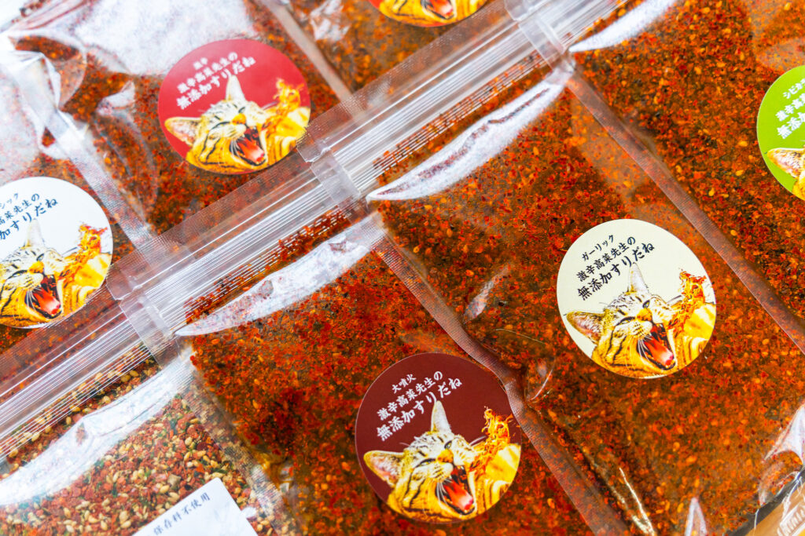
富士吉田名物すりだねとは？
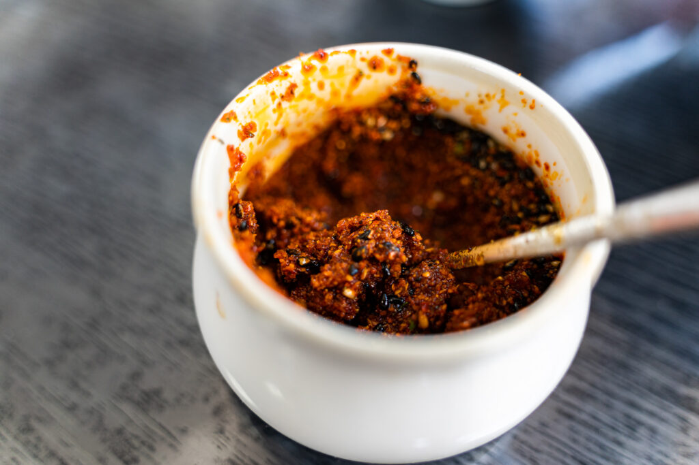
すりだねは、赤唐辛子をベースにゴマや山椒を加え油で炒めた調味料のことです。
富士吉田や河口湖にある吉田のうどんやほうとうのお店に行くと必ずおいてあり、ほとんどのお客さんがせっせとすりだねをうどんに投入します。
一般的にうどんにかける辛味は「一味」や「七味」を思い浮かべますが、ここ河口湖の吉田のうどんには「一味」や「七味」の代わりに「すりだね」なのです。
すりだねは”辛味”や”辛いの”などとも呼ばれていて、天かすや醤油と同じ様にカウンターやテーブルに置かれています。
ただ辛いだけじゃなく、辛い中にも旨味がギュッと凝縮されていて、辛い調味料が苦手な方でも少し入れるだけで旨味を感じることが出来ると思います。よくある一般的なすりだねはしっとりしているものが多いですが、こちらもお店によって作り方が様々なので、油で炒めたり、醤油や砂糖、おかかを入れたりと独自の味を確立しています。
当店では、店頭販売にて一番人気のお土産にもピッタリなお手軽サイズ60gや、大容量サイズ（150g、300g）などサイズも種類豊富に取り揃えております。
ご用途に合わせてお選びいただけます。
富士家自家製のすりだねのご紹介
当店の特製すりだねをご紹介致します。
当店ならではの辛さと味のバリエーションをお楽しみください。
写真は全て60gサイズです。
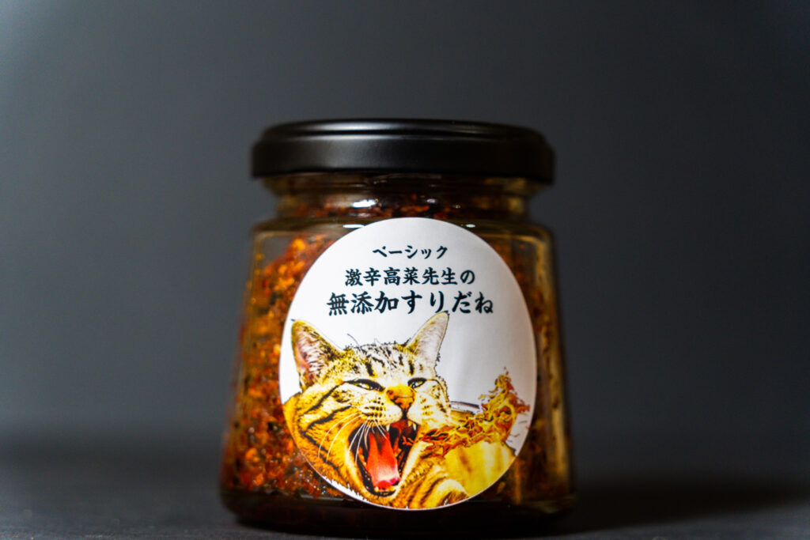
すりだねベーシック
- 店頭販売価格 ¥700~
- 辛さレベル🌶
すりだねベーシックは辛いものが苦手な方でもすりだねを楽しんでいただけるように商品化した辛さ控えめのすりだねになります。うまみを出すために天然かつお節を粉末にしたものを混ぜており、そのままどんな料理にでも使っていただけます。当店自慢の一品を是非お試しください。
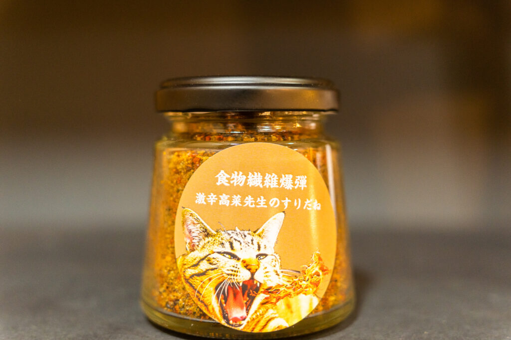
すりだね食物繊維爆弾
- 店頭販売価格 ¥700~
- 辛さレベル🌶
すりだね食物繊維爆弾はレベル２のすりだねベーシックに食物繊維豊富な当店オリジナルの【すごい粉】を混ぜたものです。寒天、米ぬかなど食物繊維がたくさん入っている素材のみを使用しており、女性に人気です。辛さもかなり控えめになっており、いろんな料理に使用できます。
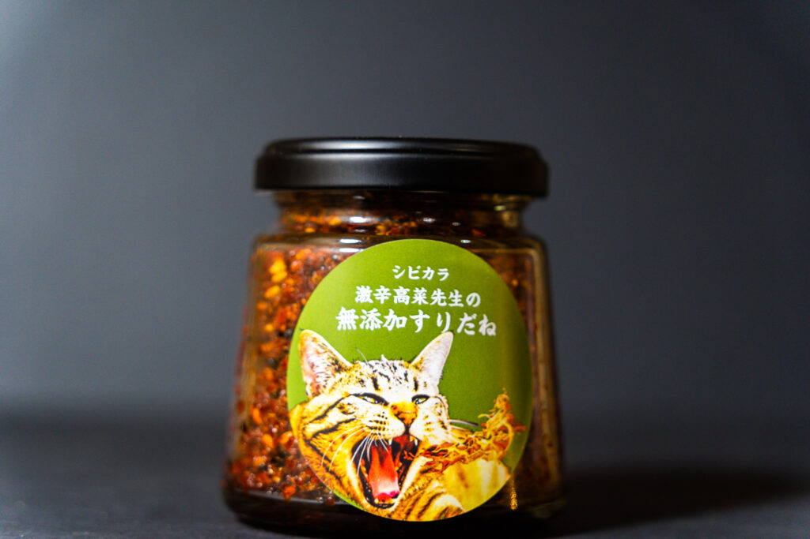
すりだねシビカラ（山椒）
- 店頭販売価格 ¥700~
- 辛さレベル🌶🌶
すりだねシビカラは当店人気NO.1！厳選した山椒をミックスした商品です。うどんやラーメンなどの汁物にアクセントとしての使用がオススメですが、麻婆豆腐など中華料理とも相性バツグンです。
シビレる辛さがお好きな方はぜひお試しください。
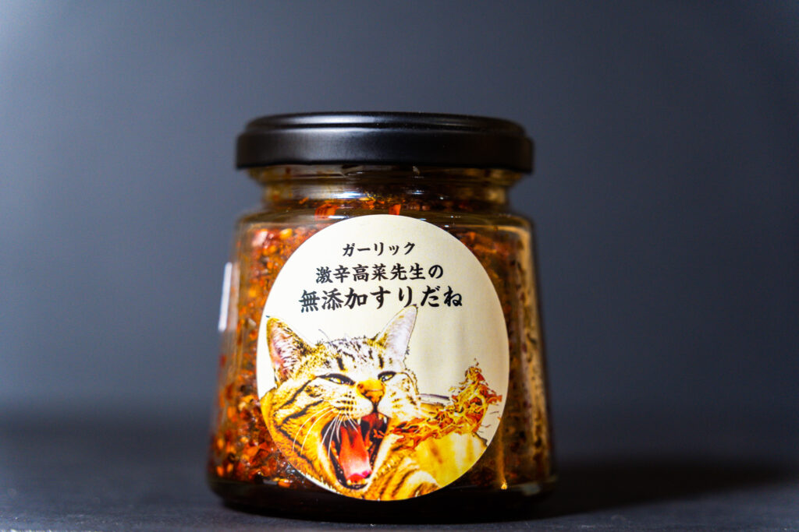
すりだねガーリック
- 店頭販売価格 ¥700~
- 辛さレベル🌶🌶
すりだねガーリックは当店で人気の商品です。ザクザクとした食感をだすために天然ガーリックチップを混ぜ、さらに乾燥させたにんにくを粉末にしたパウダーとインド産唐辛子を配合しており、ラーメンやチャーハンなどにぴったりです。
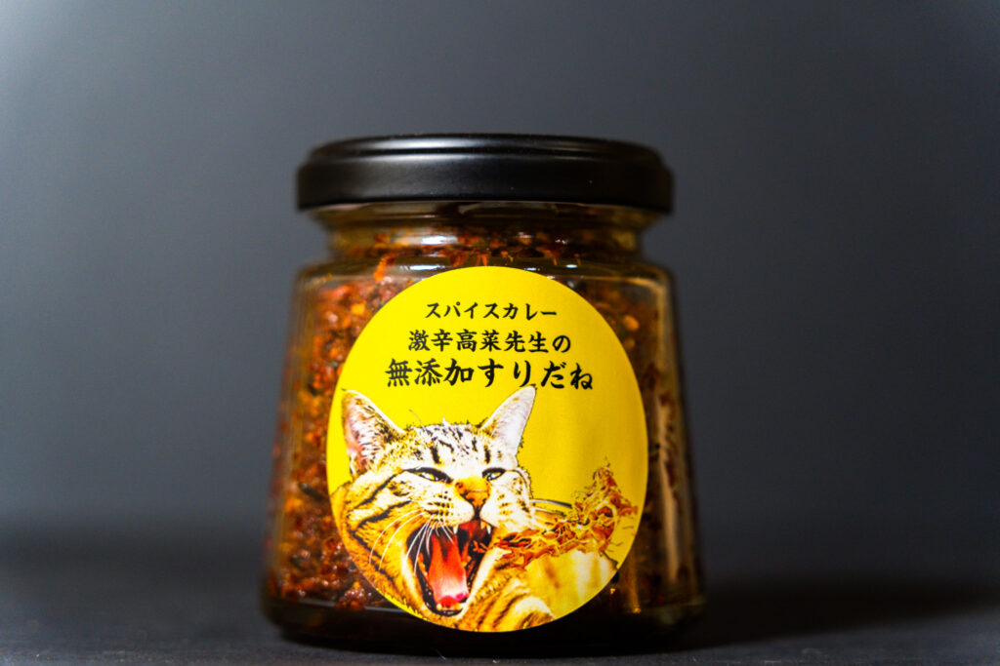
すりだねスパイスカレー
- 店頭販売価格 ¥700~
- 辛さレベル🌶🌶
すりだねスパイスカレーは本場インドなどから仕入れたスパイスとインド産唐辛子を配合したすりだねです。ターメリック、コリアンダー、クミンなど本格スパイスは美容にも健康にもいい成分が含まれているのでおすすめです。
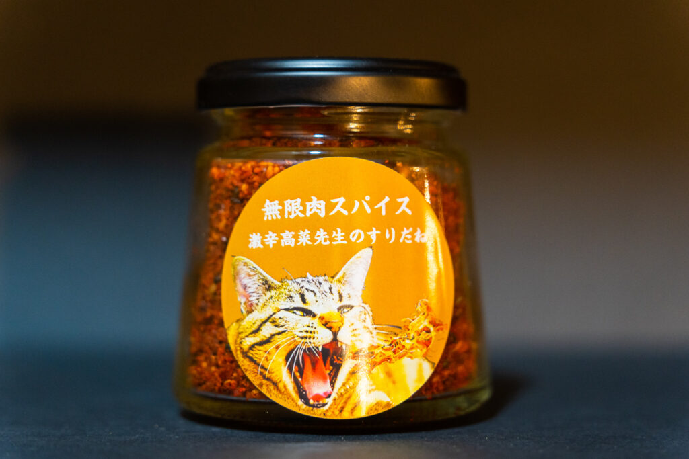
すりだね無限肉スパイス
- 店頭販売価格 ¥700~
- 辛さレベル🌶🌶
すりだね無限肉スパイスはすりだねと10種類以上のスパイスを独自にブレンドした商品です。バーベキュー、焼き肉などのお供にぜひご使用ください。
肉だけでなく魚、野菜炒め、揚げ物などにもご使用いただけます。
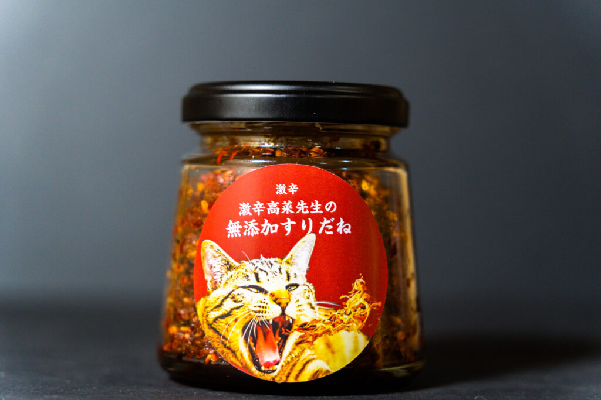
すりだね激辛
- 店頭販売価格 ¥700~
- 辛さレベル🌶🌶🌶
すりだね激辛は辛いものが大好きな方の為にオーナーがあちこち探し回って発見したインド産激辛唐辛子をブレンドしたすりだねになります。激辛というわりにあまり辛くなくて中々満足するものに出会えてない方におすすめです。
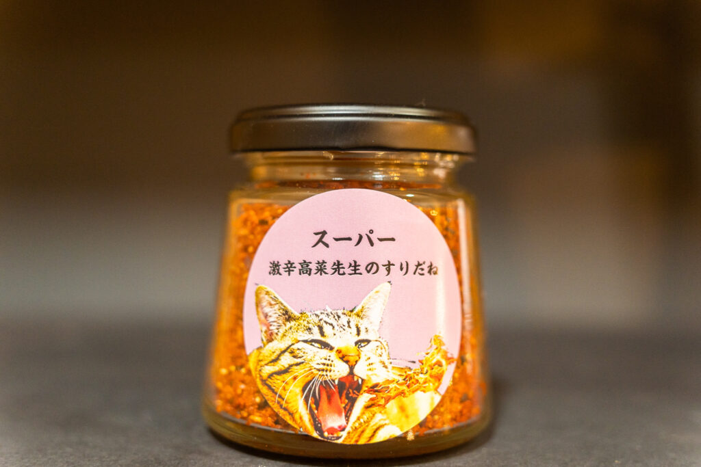
すりだねスーパー
- 店頭販売価格 ¥700~
- 辛さレベル🌶🌶🌶
すりだねスーパーはスーパーフード3種類をミックスした健康的なすりだねです。玄米の表面の部分の米ぬか、豆腐を作る際にできるおからはビタミン、食物繊維、たんぱく質が豊富に入っております。
また古代アステカ時代から食べられているスーパーフードアマランサスも配合しています。
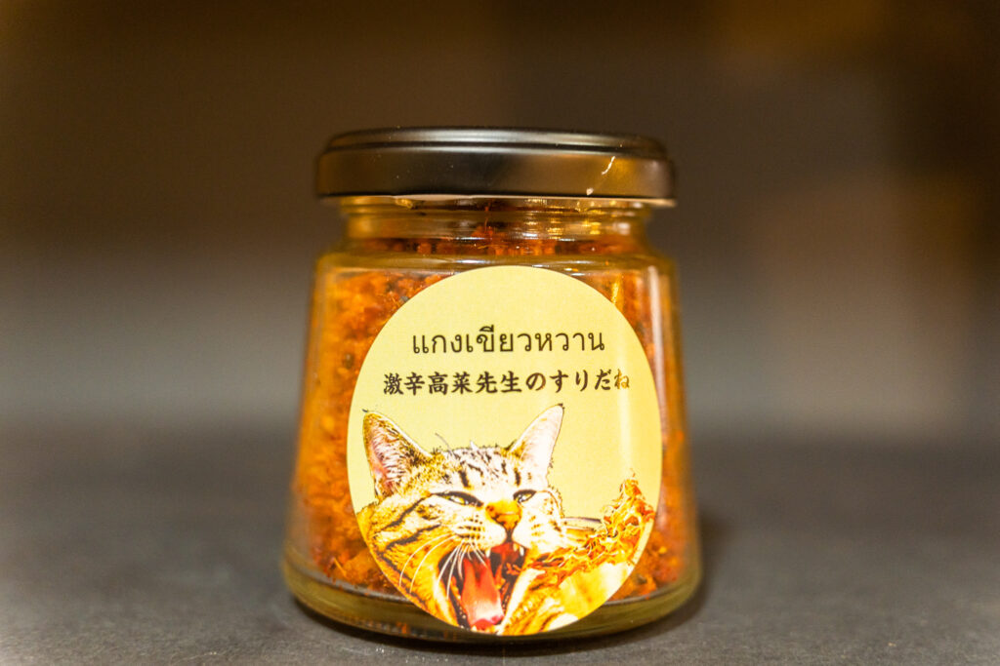
すりだねแกงเขียวหวาน
- 店頭販売価格 ¥700~
- 辛さレベル🌶🌶🌶
すりだねแกงเขียวหวานは”ゲーンキャオワーン”と読み、日本語でいうグリーンカレーのことです。タイで人気のグリーンカレーに使われるスパイス数種類とココナッツとすりだねをブレンドしております。スパイシーな料理やスープと相性が良いのでぜひお試しください。
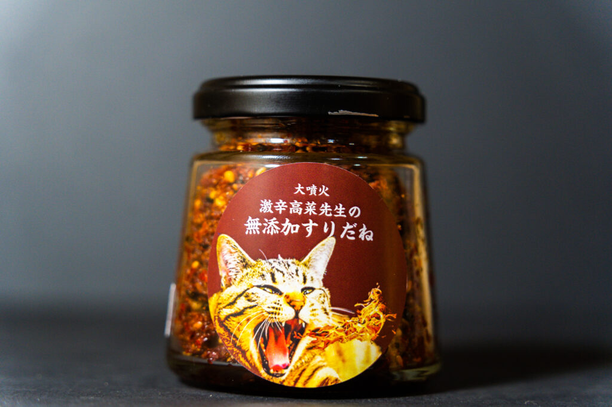
すりだね大噴火
- 店頭販売価格 ¥700~
- 辛さレベル🌶🌶🌶🌶
すりだね大噴火は、本当に辛いものが大好きな方の為に作った商品です。辛いものが苦手な方は食べられないレベルですのでご注意ください。
辛いですがダシのうまみも感じられますので様々な料理にお試しください。
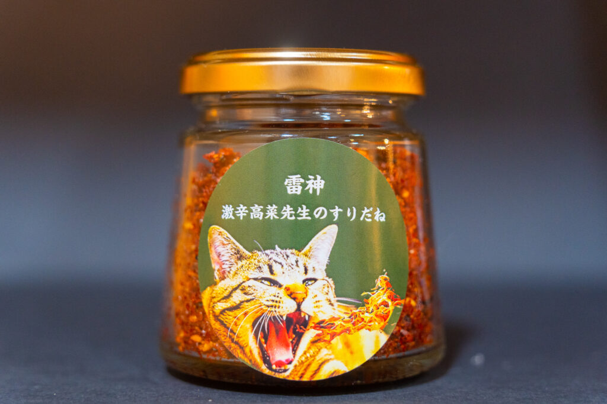
すりだね雷神
- 店頭販売価格 ¥700~
- 辛さレベル🌶🌶🌶🌶
すりだね雷神は当店人気NO.1のシビカラにホールの花椒とインド産唐辛子を混ぜて電気のようにしびれる辛さにしました。スープに入れれば火鍋風、麻婆豆腐にかければ本格四川風になります。シビカラでは物足りない方にオススメです。
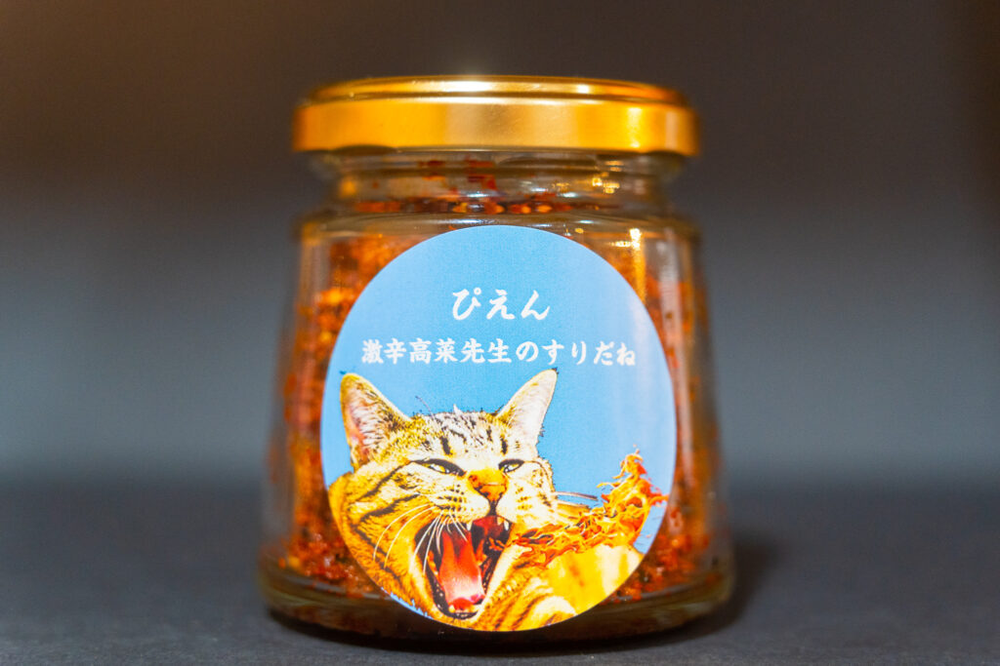
すりだねぴえん
- 店頭販売価格 ¥700~
- 辛さレベル🌶🌶🌶🌶🌶
すりだねぴえんは当店の辛さレベル５のすりだねで、普通の方や辛い物が苦手な方が食べるとぴえんと泣いてしまう辛さです。レベル１~４に使用している韓国産のキムチ唐辛子の割合を大幅に下げ、インド産の激辛唐辛子を多めに配合しております。大噴火では物足りない方にオススメです。
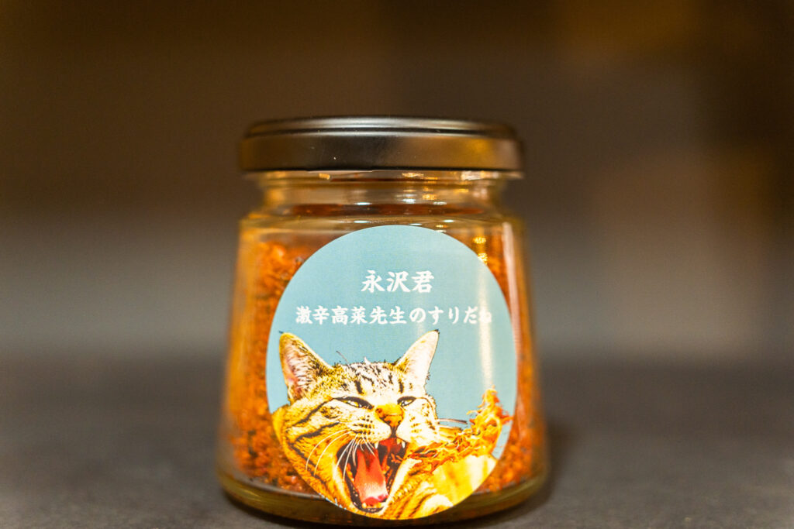
すりだね永沢君
- 店頭販売価格 ¥700~
- 辛さレベル🌶🌶🌶🌶🌶
すりだね永沢君はご存じ国民的人気アニメに登場するあの名わき役をモチーフにしたすりだねです。インド産唐辛子を使用した激辛すりだねにフライドオニオンを混ぜています。
オニオンの風味と触感も感じられる一品になっております。
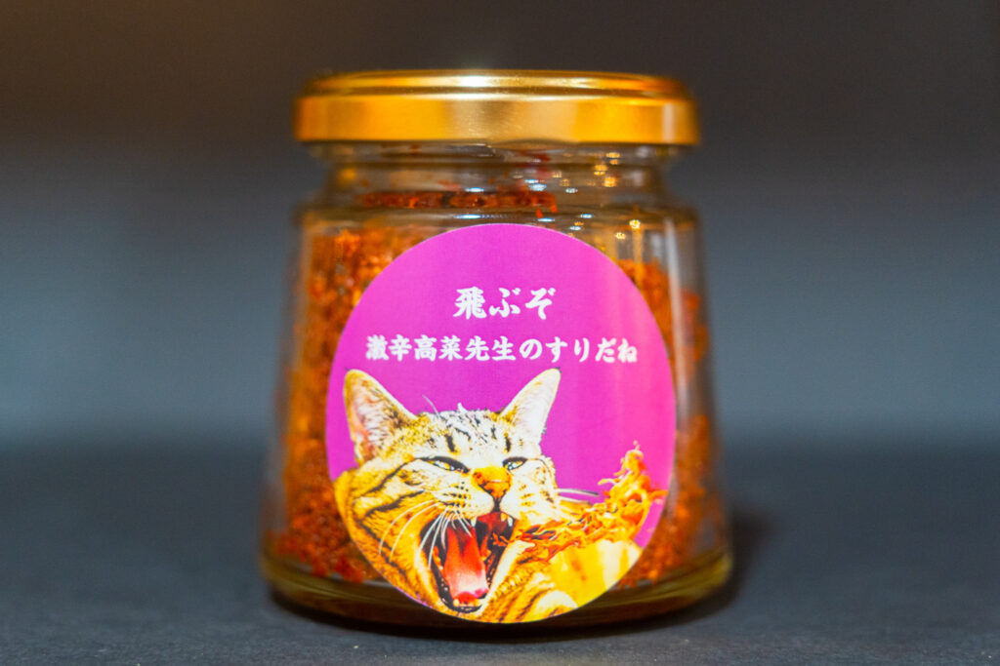
すりだね飛ぶぞ
- 店頭販売価格 ¥700~
- 辛さレベル🌶🌶🌶🌶🌶🌶
「食ってみな。飛ぶぞ。」あの長州力が生んだ名言を丸ごとパクらせていただきました。激辛の本場四川で使われる希少な広西唐辛子を混ぜ込んでおり、かなり辛いです。
辛い物が苦手な人は食ってみな。飛ぶぞ。
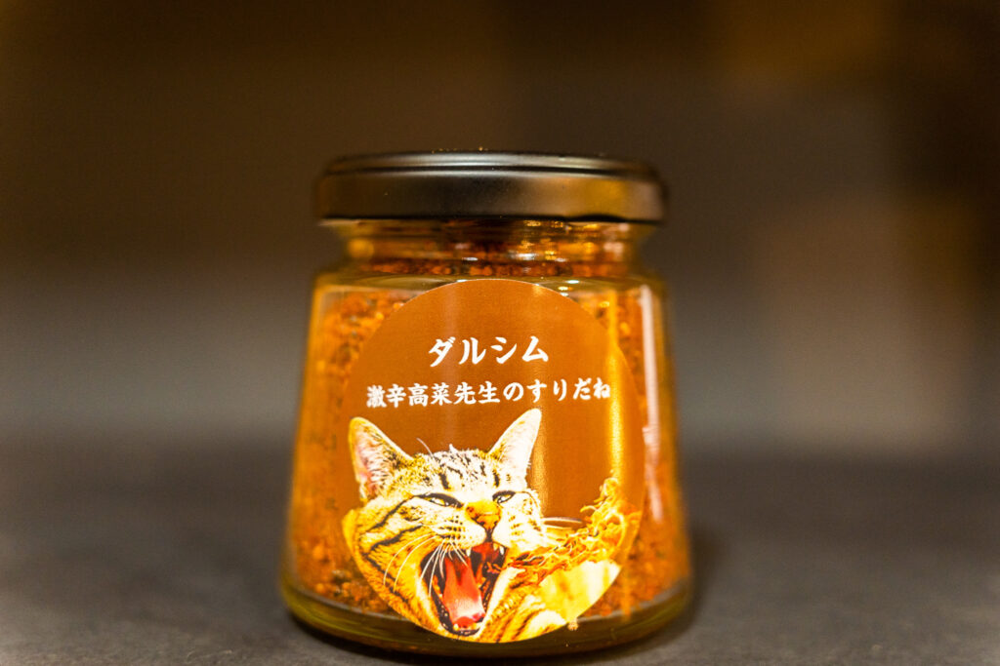
すりだねダルシム
- 店頭販売価格 ¥750~
- 辛さレベル🌶🌶🌶🌶🌶🌶
すりだねダルシムは世界的に有名なストリートファイターに出てくるあのお方をモチーフに作りました。辛いすりだねとカレーパウダーを混ぜておりついつい『ヨガファイヤ』と言いたくなるすりだね。洋風の料理やスープなどに使用するとスパイシーな風味がアクセントになります。
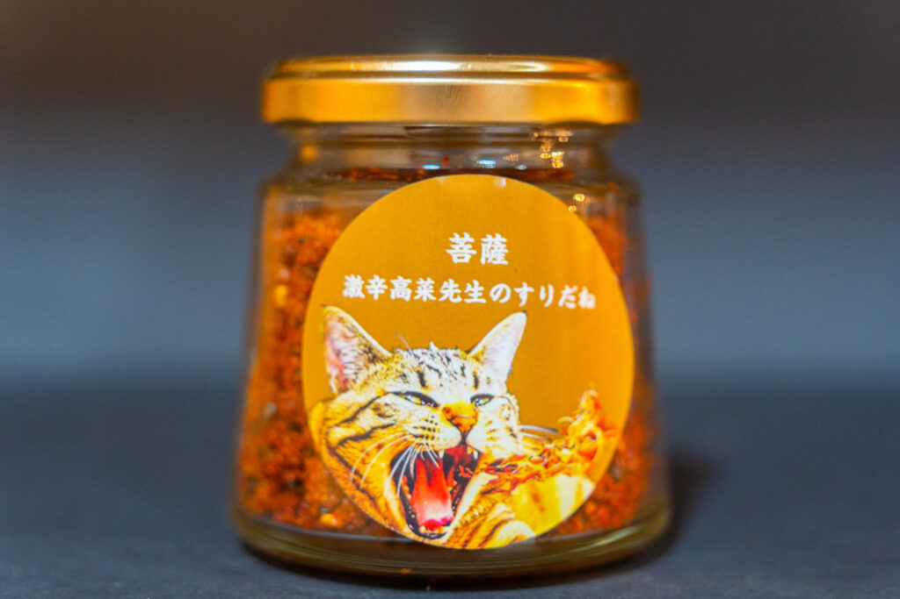
すりだね菩薩
- 店頭販売価格 ¥750~
- 辛さレベル🌶🌶🌶🌶🌶🌶
もっと辛くするためにはどうしたらいいだろう？と考えた末にメキシコの超有名激辛唐辛子ハバネロに手を出してしまいました。
インド産唐辛子と広西唐辛子に加えて鷹の爪の8倍辛いハバネロが入っており、食べると悟りが開けるかもしれません。
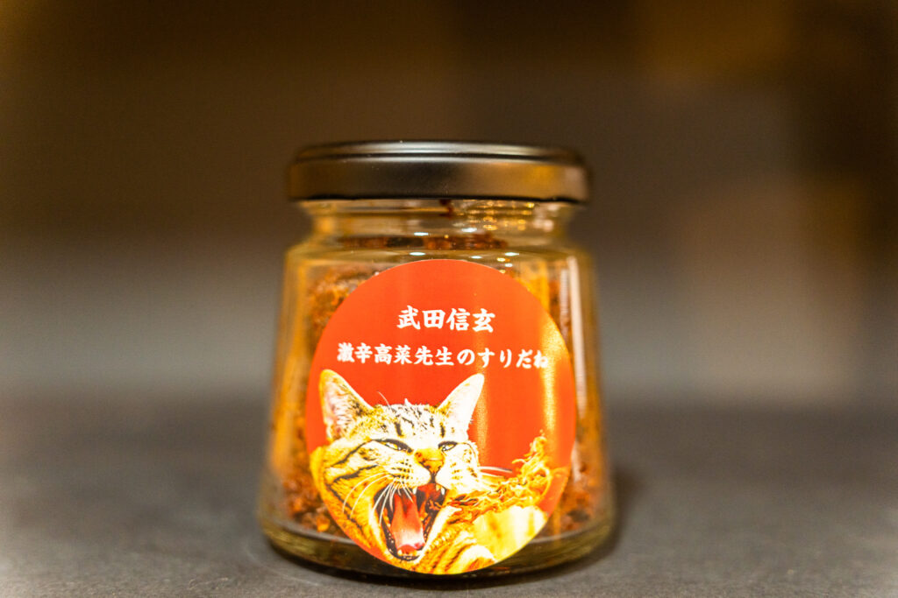
すりだね武田信玄
- 店頭販売価格 ¥750~
- 辛さレベル🌶🌶🌶🌶🌶🌶🌶
すりだね武田信玄は山梨県の英雄信玄公をイメージして作ったすりだねです。武田信玄といえば山梨、山梨といえばほうとう、ほうとうといえば味噌…ということで味噌が入っております。通常のすりだねよりさらにカツオも増しているので、辛いけど旨味もさらに増した旨辛な一品です。
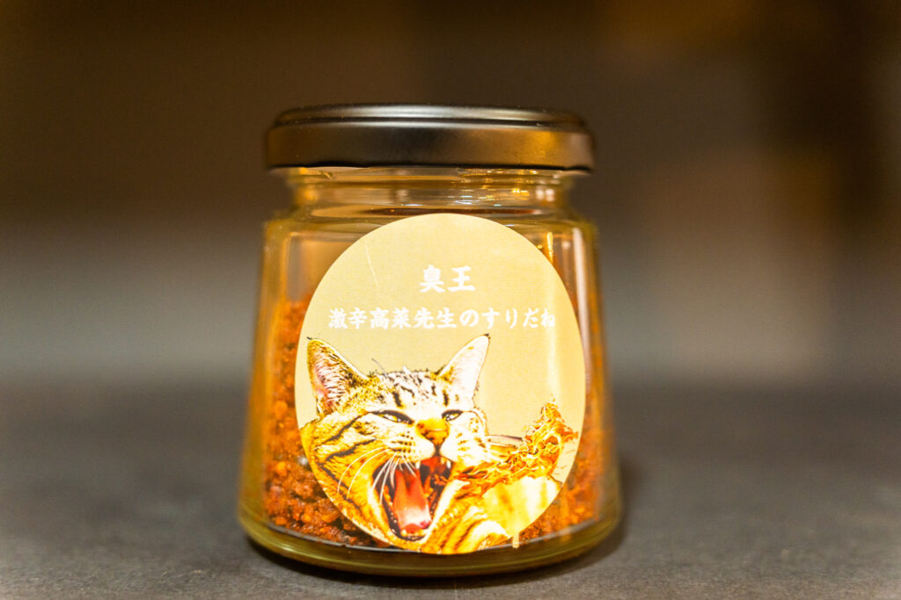
すりだね臭王
- 店頭販売価格 ¥750~
- 辛さレベル🌶🌶🌶🌶🌶🌶🌶🌶
すりだね臭王(しゅうおう)は激辛唐辛子のハバネロにガーリックチップをふんだんに混ぜたすりだねです。
激辛＆激ニンニクなのでお昼休みや朝食べると大変におってしまうかもしれませんが、刺激が欲しい方にオススメ。
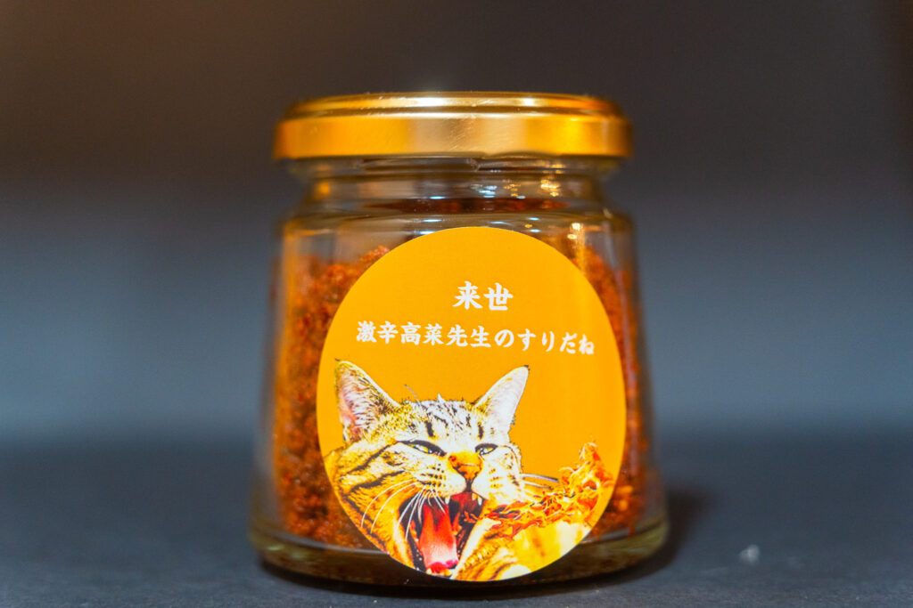
すりだね来世
- 店頭販売価格 ¥800~
- 辛さレベル🌶🌶🌶🌶🌶🌶🌶🌶🌶
ブート・ジョロキアというギネスにも乗った殺人的に辛い世界一の唐辛子入りのすりだねです。辛さは鷹の爪の25倍。現在はギネス記録を抜かれてしまいましたが最強クラスに辛いことには変わりありません。食ってみて飛んで、悟りを開いて、天国へ逝って、来世でまた会いましょう。
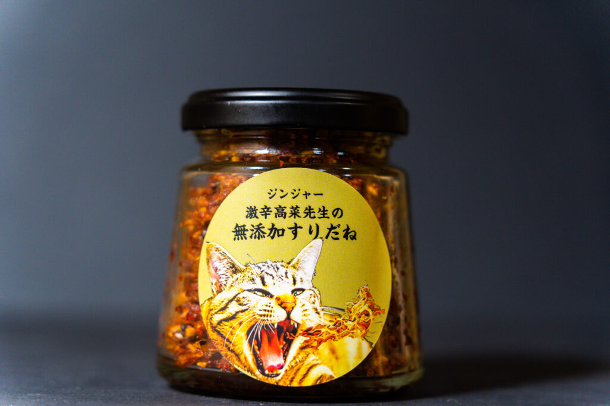
すりだねジンジャー
- 店頭販売価格 ¥800~
- 辛さレベル🌶🌶🌶🌶🌶🌶🌶🌶🌶
すりだねジンジャーかつてはレベル１の全然辛くないものでした。「生姜って体も温まるし女性にオススメできるかな」と思って作りましたが全く見向きもされませんでした。
オーナーが自暴自棄になり、ジョロキアをこれでもかとたくさん混ぜて超激辛にしたすりだねがこちらです。
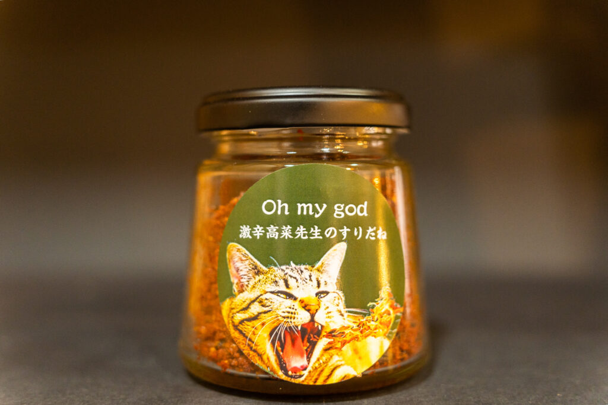
すりだね Oh my god
- 店頭販売価格 ¥800~
- 辛さレベル🌶🌶🌶🌶🌶🌶🌶🌶🌶
すりだねOh my godは大人気の山椒入りシビカラをさらに辛くした雷神のさらに辛いすりだねです。根強い人気があるシビカラにハバネロや四川唐辛子を加えた最上級のものですので、シビカラを極めたい方にオススメ。麻婆豆腐など中華料理と相性がよく、火鍋などをつくる際にもお使いください。
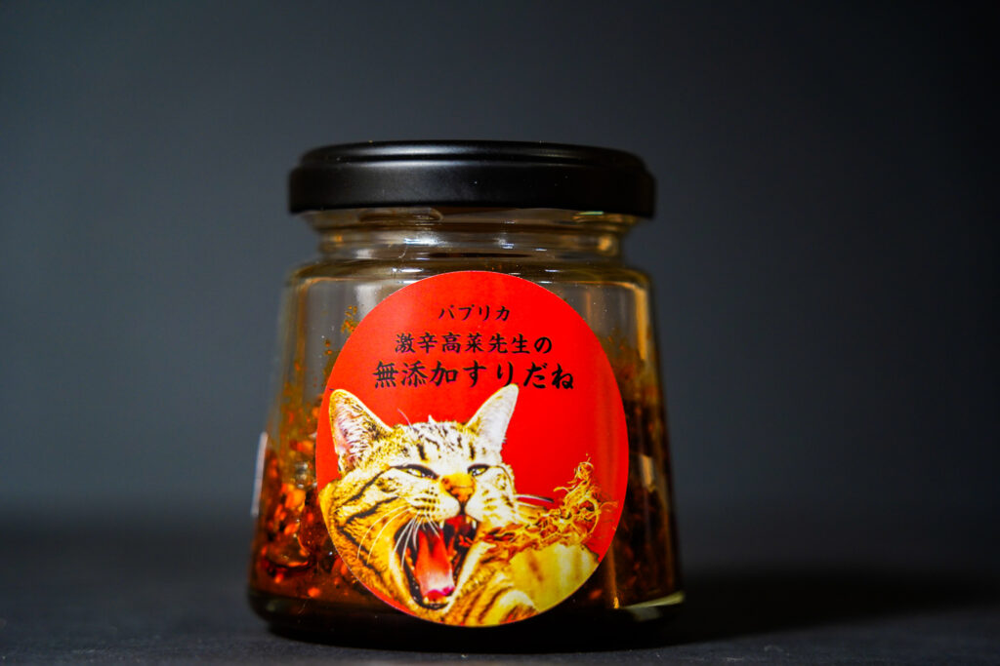
すりだねパプリカ
- 店頭販売価格 ¥800~
- 辛さレベル🌶🌶🌶🌶🌶🌶🌶🌶🌶🌶
かつてすりだねパプリカは、辛いものが苦手な方向けに赤い栄養満点のパプリカパウダーを使って作ったすりだねでした。ところが盛大にスベッていたようで買ってくれる方がいませんでした。確かに唐辛子抜きのすりだねなんてカツ丼のカツ抜きくらい意味不明なので、いっそ激辛にしてしまえと広西唐辛子やハバネロやジョロキアを盛りまくり当店NO1の激辛にしました。
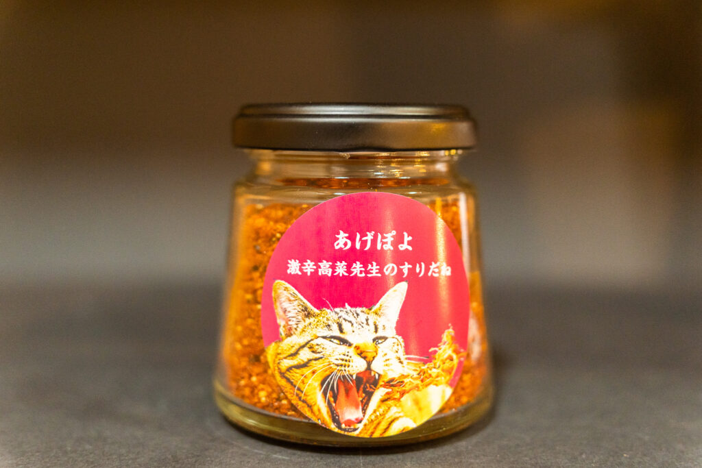
すりだねあげぽよ
- 店頭販売価格 ¥800~
- 辛さレベル🌶🌶🌶🌶🌶🌶🌶🌶🌶🌶
すりだねあげぽよは、レベル３のすりだねスーパーとおなじでアマランサスなどのスーパーフードがブレンドされている健康的なすりだねです。しかしジョロキアやハバネロなどをふんだんに混ぜているため超絶激辛です。
不健康なイメージがある激辛を払拭するため健康的かつかわいいイメージにしてみました。
通販について
当店ではすりだねの販売を行っております。
通販で購入をご希望のお客様は当店通販サイトからご購入ください。
まとめ買いのご相談やご質問等ございましたらお問い合わせページからお気軽にお申し付けください。
こんな方にオススメ
- 富士吉田名物すりだねを食べてみたい方
- 様々な味のすりだねを試したい方
- 他にはない激辛商品をお探しの方
- 業務用サイズを探している方
- 完全無添加の商品を探している方
特徴
- 完全無添加
- 厳選した素材
- 激辛をお約束
- 多数の商品をご用意
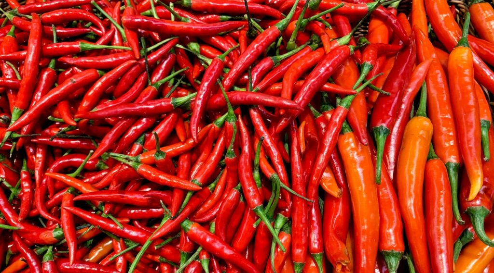
当店のすりだねは化学調味料、添加物などいい再使用しておらず厳選した天然素材のみを調合して作っています。
激辛好きの方の為に探し前割ってようやく発見した激辛唐辛子を配合したすりだねも販売しており、激辛をお約束いたします。
辛いものが苦手な方向けには野菜パウダーとミックスさせた唐辛子抜きのすりだねもご用意しており、お子様にも人気の商品となっております。
おすすめポイント
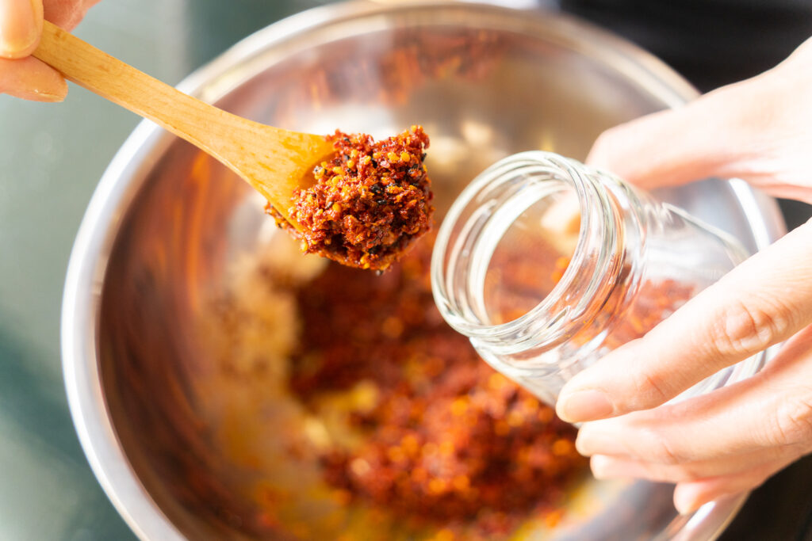
当店のオリジナルすりだねにはかつおだしをブレンドしております。
そのためただ辛いだけではなく旨味もしっかりと感じられるため、様々な料理に使用していただくことできます。
うどんやラーメンなど以外にも、漬物、卵かけご飯、炒め物、煮物とお好みでなんにでもかけてお召し上がりください。
サイズ・料金について
表示価格は全て税込みになります。
お客様の声
すりだねを購入されたお客様の感想をご紹介いたします。
{kind=link}
{kind=link}
{kind=link}
{kind=link}
{kind=link}
{kind=link}
{kind=link}
{kind=link}
{kind=link}
{kind=link}
{kind=link}
{kind=link}
すりだね通販購入の流れ
- 商品選択
- お好きな商品をお選びください。複数購入やまとめ買いなどはお問い合わせからもご注文いただけます。
- お支払い
- クレジットカードで決済をお願いいたします。
- お届け
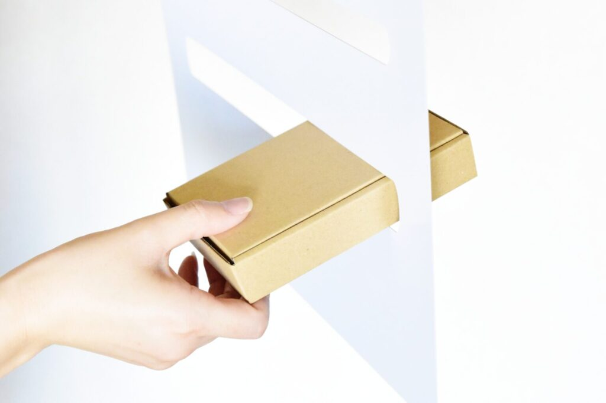
- お客様のご指定の場所へお届けいたします。
よくある質問
お客様からよく頂くすりだね・通販に関する質問ですのでぜひ一度お読みください。 ご不明な点がある方はお問い合わせよりお願いいたします。
- すりだねはうどん以外に何に合いますか？
- すりだねは万能辛味調味料としてうどん以外の色んな料理のお供として愛用されています。
丼もの、炒め物など、「もう一つ刺激が欲しい！」「味変をしたい！」という方にピッタリです。
- すりだねには何が入っていますか？
- ベースとして、二種類の唐辛子に加え、ごま油・かつおだし・黒ゴマが入っています。味や辛さレベルによって、さらに成分が追加されます。
- 賞味期限はどれくらいですか？
- １年から2年ほどになります。
- 保存方法を教えてください。
- 直射日光を避けて常温（冷蔵でも可）で保存してください。
- 辛いのが苦手なのですが…
- すりだねはただただ辛いというより、ごま油やかつおだしが入っていますので旨味もあります。ですので、辛いのが苦手な方にもご好評いただいております。
- 発送までどれくらいかかりますか？
- 可能な限りお早めに発送いたしますが、予約状況などにより1日～4日かかる場合がございます。
万が一、4日以上経っても送られてこない場合は大変お手数ですが、お問い合わせページよりご連絡ください。
- 店舗でも買えますか？
- はい、お買い求めいただけます。ほうとう・吉田のうどんの体験後の食事にもお出しします。